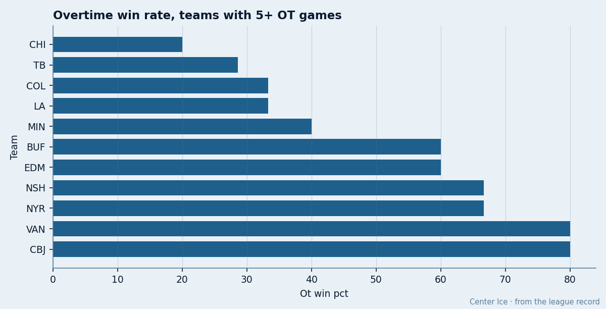
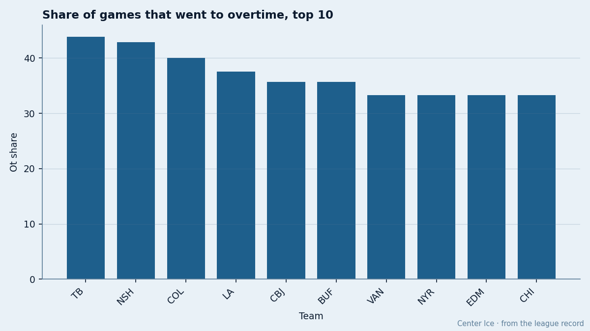
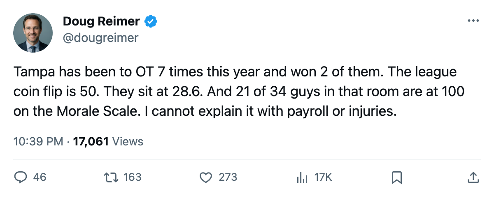

Tampa Bay Goes to Overtime 7 Times, Wins 2, and Has 61.8% of Its Roster at 100 Morale
The widest overtime gap in hockey sits inside the 2nd-happiest room in the league
 Doug ReimerAnalytics editor, ex-video coach · The Slot Report
Doug ReimerAnalytics editor, ex-video coach · The Slot Report
Tampa Bay has been to overtime 7 times in 16 games. It has won 2. The league's overtime win rate sits at 50.0 percent.
That gap, measured against the Morale Scale, is the most unusual combination in hockey right now: the club with the most overtime exposure in the league, losing those games at a 28.6 percent rate, has the 2nd-highest club average at 97.6 and 21 of 34 players at a perfect 100.

The Overtime Board
I ranked every club with at least 5 overtime games by OT win percentage. Tampa Bay sits 10th of 11, above only Chicago, which is 15th in the West and has a 20.0 percent rate on 5 games.
| Club | OTW | OTL | OT games | OT win pct | OT share of GP | Pts | GP |
|---|---|---|---|---|---|---|---|
 Chicago Blackhawks Chicago Blackhawks | 1 | 4 | 5 | 20.0 | 33.3 | 10 | 15 |
 Tampa Bay Lightning Tampa Bay Lightning | 2 | 5 | 7 | 28.6 | 43.8 | 21 | 16 |
 Colorado Avalanche Colorado Avalanche | 2 | 4 | 6 | 33.3 | 40.0 | 18 | 15 |
 Los Angeles Kings Los Angeles Kings | 2 | 4 | 6 | 33.3 | 37.5 | 14 | 16 |
 Minnesota Wild Minnesota Wild | 2 | 3 | 5 | 40.0 | 31.3 | 15 | 16 |
 Buffalo Sabres Buffalo Sabres | 3 | 2 | 5 | 60.0 | 35.7 | 14 | 14 |
 Edmonton Oilers Edmonton Oilers | 3 | 2 | 5 | 60.0 | 33.3 | 12 | 15 |
 Nashville Predators Nashville Predators | 4 | 2 | 6 | 66.7 | 42.9 | 20 | 14 |
 New York Rangers New York Rangers | 4 | 2 | 6 | 66.7 | 33.3 | 28 | 18 |
 Vancouver Canucks Vancouver Canucks | 4 | 1 | 5 | 80.0 | 33.3 | 19 | 15 |
 Columbus Blue Jackets Columbus Blue Jackets | 4 | 1 | 5 | 80.0 | 35.7 | 21 | 14 |
Tampa's 43.8 overtime share is the highest in the league. No other club has gone to extra time in more than 42.9 percent of its games.

The Goal Differential Explains the Exposure
The reason Tampa keeps reaching overtime is its goal production relative to its goal prevention. The club scores 3.06 per game and allows 2.56. That is a +0.50 per-game differential, worth +8 across 16 games. A team that scores 3 and gives up 2.56 produces close games: many finish one goal apart or tied after three periods.
The +8 differential should put Tampa higher than 4th in the East at 21 points. The 5 overtime losses, each worth 1 point rather than 2, are where the gap lives. The goal differential says this team is closer to a 25-point pace than a 21-point pace.
The Morale Puzzle
A team losing 5 of 7 overtime games, sitting one point above the 8th seed with 66 games left, should register some frustration on the Morale Scale. Tampa has 21 players at 100, which is 61.8 percent of its roster. Only Vancouver Canucks at 99.3 and Colorado Avalanche at 97.7 have club averages near Tampa's 97.6.  Florida Panthers matches it exactly.
Florida Panthers matches it exactly.
Tampa Bay Lightning has also lost 1 total day to injury across 4 spells, the lowest in the league. The problem is 5 points hiding inside 5 one-goal games that went to the extra frame and came back with only half the reward.
 Vincent Lecavalier89, at $2.60M on an expiring deal, sits at 100 morale with 20 points in 16 games. His pace of 102 carries the club. Khabibulin in net has started 16 of 16, the only goaltender in the league with a 100 percent workload. Everyone's available, everyone's happy, and the problem is a coin flip that keeps landing wrong.
Vincent Lecavalier89, at $2.60M on an expiring deal, sits at 100 morale with 20 points in 16 games. His pace of 102 carries the club. Khabibulin in net has started 16 of 16, the only goaltender in the league with a 100 percent workload. Everyone's available, everyone's happy, and the problem is a coin flip that keeps landing wrong.
What the 50 Percent Baseline Means
The league's overtime win rate is 50.0 percent. That is a coin flip: any team of average quality should split its overtime games. Tampa's 28.6 rate is 21.4 percentage points below the baseline. On 7 games, that gap is the difference between a coin-flip conversion and a team that keeps reaching the extra frame and keeps losing it.
Chicago is worse at 20.0 but has no pretense of being a playoff team. Tampa does. The Columbus Blue Jackets sheet at 80.0 overtime winning percentage in 5 games, with the same 21 points from 14 games (not 16), illustrates what 50-plus percent OT conversion does to a standing.
The Room Knows
 Martin Straka86 of
Martin Straka86 of  Pittsburgh Penguins, who sits 87 in the Book on $4.20M with an expiring deal, told The Tunnel's Jan Kowalczyk on November 6 about his own team's approach: "It tells me we haven't overpaid for the wrong people yet. But right now, the money's in the right spots." Tampa's payroll sits at $59.79M on 21 points, $2.85M a point, which is the 3rd-best rate in the league behind only Pittsburgh and Nashville. The money is in the right spots there too. The room at 97.6 believes it.
Pittsburgh Penguins, who sits 87 in the Book on $4.20M with an expiring deal, told The Tunnel's Jan Kowalczyk on November 6 about his own team's approach: "It tells me we haven't overpaid for the wrong people yet. But right now, the money's in the right spots." Tampa's payroll sits at $59.79M on 21 points, $2.85M a point, which is the 3rd-best rate in the league behind only Pittsburgh and Nashville. The money is in the right spots there too. The room at 97.6 believes it.
The overtime gap is the arithmetic of a 43.8 percent schedule exposure combined with a 28.6 percent conversion rate: a team that keeps getting close and keeps losing the last five minutes.
Tampa plays  St. Louis Blues at home on November 15.
St. Louis Blues at home on November 15.
